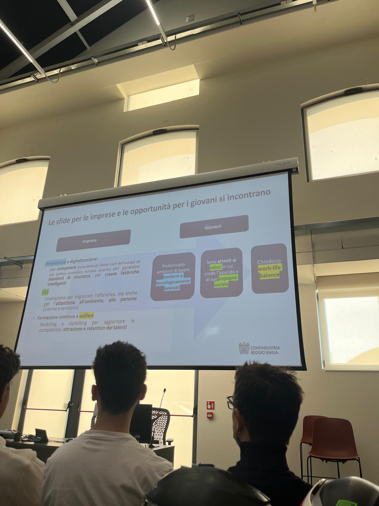
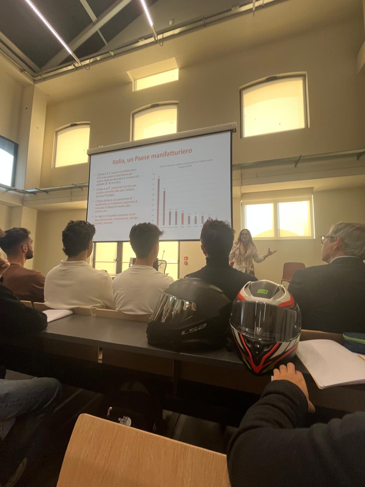
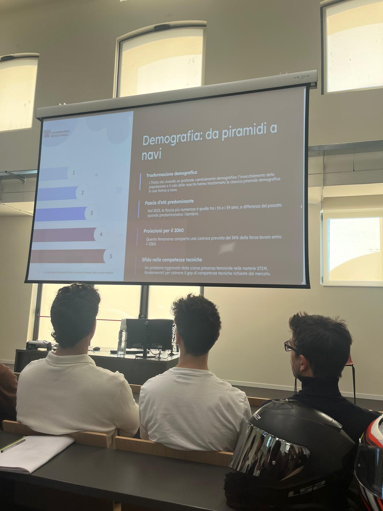

CNA
Durata: 2 ore+ 10 minuti test finale
Incontro avvenuto in data 30 settembre presso il Tecnopolo di Reggio Emilia, realizzato a cura del CNA, sigla che sta per Confederazione Nazionale dell'Artigianato e della Piccola e Media Impresa. Il suo scopo principale è assistere, tutelare e sostenere gli interessi delle micro, piccole e medie imprese e degli artigiani. Un’altra sua missione è promuovere la crescita professionale e imprenditoriale attraverso attività di formazione, permettendo così alle aziende di innovarsi e svilupparsi. In questo caso, l’incontro si inserisce proprio in quest’ottica, rappresentando un momento di confronto e approfondimento su tematiche rilevanti per il mondo del lavoro. L’incontro è stato suddiviso in due parti: la prima riguardava il contesto macroeconomico in cui si trovano oggi i giovani, mentre la seconda era incentrata sugli strumenti per l’orientamento personale e professionale.
La prima parte dell’incontro trattava dei lavori del futuro. Attualmente l’Italia è la seconda potenza manifatturiera in Europa, ma è molto esposta alla deglobalizzazione, all’invecchiamento della popolazione, all’instabilità mondiale e a una forte transizione tecnologica. Sono state analizzate cinque forze destabilizzanti: l’avanzamento tecnologico, la transizione ecologica, il cambiamento demografico, un mercato mondiale sempre meno libero e più frammentato in blocchi, e le tensioni geopolitiche. Con questa trasformazione alcune professioni verranno automatizzate, soprattutto quelle caratterizzate da attività ripetitive, mentre ne nasceranno altre, ad esempio quelle legate alla programmazione di questi automatismi, alla sicurezza informatica, all’intelligenza artificiale e alla gestione dei dati. Per questo motivo saranno sempre più richieste competenze matematiche, ingegneristiche, scientifiche e tecnologiche, che oggi risultano ancora carenti nel mercato del lavoro.
Dopo una pausa di 30 minuti si è svolta la seconda parte dell’incontro, più orientata a comprendere la propria personalità per individuare l’ambiente di lavoro e la professione più adatti. Ci è stato presentato il modello di John L. Holland, rappresentato tramite un esagono che illustra sei possibili tipologie di personalità: realistico, investigativo, artistico, sociale, imprenditoriale e convenzionale. Queste categorie vengono messe in relazione con i possibili ambienti di lavoro, così da aiutare lo studente a riflettere su sè stesso e su ciò che potrebbe essere più adatto alle proprie caratteristiche.
Sono poi state spiegate le hard skills e le soft skills: le prime sono competenze specifiche di un determinato ambito lavorativo e si acquisiscono con lo studio e con l’esperienza; le seconde, invece, riguardano la persona, infatti vengono definite competenze trasversali, perchè descrivono il modo in cui ci si relaziona con gli altri e si lavora. Le hard skills sono facilmente certificabili, perchè si acquisiscono attraverso percorsi di studio o corsi specifici e vengono riportate nel curriculum, mentre le soft skills sono più personali e non possono essere certificate direttamente, ma possono essere sviluppate e migliorate nel tempo.
Competenze:
—Competenza personale, sociale e capacità di imparare ad imparare
—Competenza imprenditoriale
—Competenza sociale e civica in materia di cittadinanza
RIFLESSIONE PERSONALE
Questo incontro è stato utile poichè mi ha fatto riflettere su come il mondo del lavoro stia cambiando e su quali competenze saranno le più richieste in futuro. Ho capito che molte professioni si stanno evolvendo a causa dei cambiamenti tecnologici, economici e sociali, e che sarà importante essere pronti ad adattarsi e a sviluppare competenze adeguate.
La parte che mi ha colpito di più è quelle innerente all’orientamento personale, perchè mi ha aiutato a capire quanto sia importante conoscere le proprie capacità e le proprie caratteristiche per scegliere il percorso lavorativo migliore per la propria persona.La distinzione tra hard skills e soft skills è stata anche interessante, perchè mi ha fatto capire il fatto che non contano solo le conoscenze tecniche, ma anche il modo in cui ci si relaziona con gli altri e si affrontano le varie situazioni.
Concludendo, questa attività è stata importante perchè mi ha dato una visione più chiara delle opportunità e delle difficoltà del mondo del lavoro, aiutandomi a riflettere con maggiore conoscenza sul mio futuro.